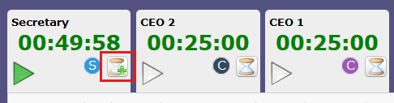
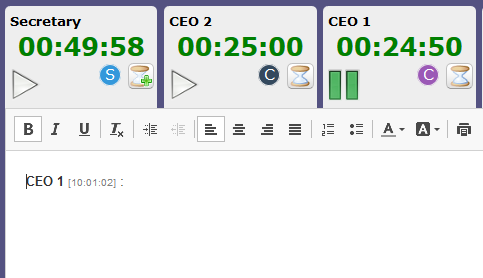
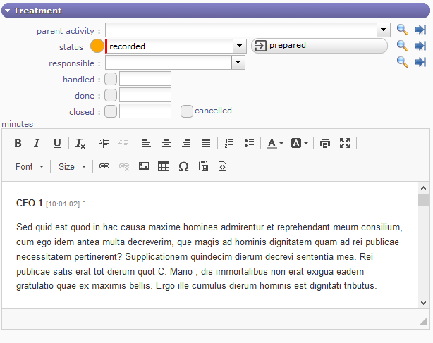
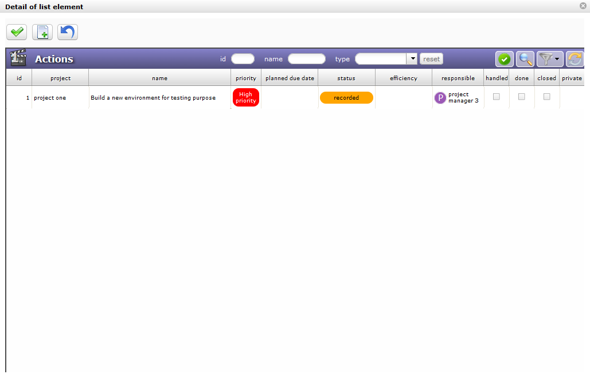

Meetings¶
Meeting screen
Meeting items are stored to keep track of important meetings during the project lifecycle :
- Progress Meetings
- Steering committees
- Functional workshops
In fact, you should keep track of every meeting where decisions are taken, or questions answered.
This will provide an easy way to find back when, where and why a decision has been taken.
Each meeting is displayed in the agenda
Project task
- Meeting is a task. they appear in the imputation sheets with the date fixed.
- You can assign project resources (named attendees).
- You have progress section that allows for followed resources work and cost.
Section Description
| Field | Description |
|---|---|
| Id | Unique Id for the meeting. |
| Name | Short description of the meeting. |
 Meeting type Meeting type |
Type of meeting. |
| Project |
The project concerned by the meeting. |
| Meeting date |
The initial date of the meeting, including the start and end time. |
| Location | Place (room or else) when meeting will stand. |
| Email invitation | Send an email to the expected participant in the Attendees section |
| Start Meeting button | Allow to go on the live meeting screen. |
| Agenda of the meeting | Description of the meeting and agenda. |
Field Name
If not set, will automatically be set to meeting type completed with meeting date.
Note
Description can be used to store agenda.
Button Email invitation
- Allows to send the email to attendees.
- They will receive the invitation in their calendar management tool.
Section Treatment
| Field | Description |
|---|---|
| Parent activity | Parent activity of the meeting. |
| Status |
Actual status of the meeting. |
| Responsible | Resource who is responsible for the organization of the meeting. |
| Handled | Flag to indicate that meeting has been taken into account. |
| Done | Flag to indicate that meeting has been held. |
| Closed | Flag to indicate that meeting is archived. |
| Cancelled | Flag to indicate that meeting is cancelled. |
| Minutes | Minutes of the meeting. |
Field Parent activity
- In the WBS structure, under which the meeting will be displayed in the Gantt planning.
Note
Minutes
You can enter here only a short summary of the minutes and attach the full minutes as a file.
Steering
Retrieving the agenda of a meeting from the description of its type
Diary
Viewing meetings in agenda, even if they are not planned
Live Meeting¶
With LiveMeeting you can manage meetings in an :ref:`Agile` way:
- Manage minutes of meetings quickly
- Automatically share the time between all participants
- Dynamically measure the speaking time of each participant
- Easily write minutes while assistants speak
- Easily manage actions / decisions / questions while writing minutes
- Manage tickets, activities, actions and requirements with Kanban while writing minutes.
A new button is present in the meeting screen:
The Live Meeting button
Click this button to access the Live Meeting Management screen.
The Live Meeting screen
- Click on
 to exit the LiveMeeting screen
to exit the LiveMeeting screen - Click on
 to save the live meeting report
to save the live meeting report
Kanban Management
Click on to manage the kanbans
{kind=link}
Kanban management in the Live Meeting
You can manage your Kanban tiles directly in the Live Meeting interface.
Starting a meeting
When the Live Meeting screen opens, the duration of the meeting is automatically distributed equally to all participants.
Time distribution
- Click on to start the meeting and to start decrementing the speaking time
- Click on To stop the meeting and therefore close the LiveMeeting window to return to the current meeting screen
- Click on to pause the speaker’s time
{kind=link}
{kind=link}
{kind=link}
Set the organizer
Before starting the meeting, you can define an organizer who will need additional speaking time to be able to lead the meeting.
To designate it, click twice on the hourglass | LiveMeetingSpeak | to obtain the symbol | moreButton | on the icon.
The organizer is designated, and sees his time increment double by taking equitable time on the other participants.
The designated organizer has a PLus on the hourglass icon of his tab
Note that only one participant can be defined as an organizer.
To set another participant as an organizer, you must first redefine the current organizer as a normal participant by clicking the hourglass button again.
Speaking Time
If you started the meeting by clicking on the Play icon at the top right of the screen, then this is the first speaker displayed, the one with the green sign that will begin speaking.
Otherwise, click on the speaker’s tab of your choice to start your speaking time.
- Click on
to prevent a speaker from speaking
- Click on
to give him the floor again
If you prevent a speaker’s speaking time by clicking on the hourglass, then the remaining speaking time of the speaker will be redistributed to the other participants entitled to speak.
Write a meeting report
During the course of the meeting, the person in charge of the report can inform and report the words of the various participants.
The text editor is dynamic and reacts to speakers who have the floor.
When one speaker is finished and another speaker speaks, a field is added in the text editor with the name of the speaker with the detail of the time
The pause is also mentioned always with the detail of the time.
Field with the speaker’s name
When you stop LiveMeeting by clicking | meetingStop | the meeting report is automatically copied to the Minutes field in the treatment section.
The meeting report is copied in the minutes field in the treament section
Actions, Decisions and Actions
In the lower part of the screen, if the kanban is not open, you have direct access to actions, decisions and questions.
Actions, Decisions, Questions Management
Each list acts as the standard “linked element” element present on almost every element screen.
You can then list an item to add it to the list of related items, but also create a new item to add to the list, just like for the Linked Items feature.
All linked items through this feature will appear in linked items in the meeting.
Important
Slight difference
But there is a slight difference with related items:
when you click on the name of an item, you are not redirected to it.
It simply opens in a pop-up form, allowing you to update it without leaving the LiveMeeting screen.
New element
You can create, edit, or delete an action, decision, or question from the live meeting screen.
A pop up opens and allows you to create and edit the selected element.
Creating a new action
- Click on to select an item into the list by
- Click on
to create an item
- Click on
to undo the current manipulating and close the window

Creating a new action
Periodic meetings¶
Periodic meeting is a way to define some meetings that will occur on a regular basis.

Periodic meeting screen
Note
- Most fields fit, but some information is not present for periodic meetings, such as Minutes or Status
- It is because these fields won’t be set through periodic meeting definition, but must be set directly on the meetings
Periodic meeting process
- When saving periodic meeting, elementary meetings are automatically created.
- Changes can be done in elementary meetings. In most cases, these changes won’t be erased by periodic meeting updates.
Note
Each periodic meeting is displayed in Gantt Chart under the parent meeting.
Update on a periodic meeting
- On each update of a periodic meeting, meetings are re-evaluated.
- This may lead to deletion of some meetings.
- This will also reposition meetings, even if their planned dates were elementary updated.
Attendees assignment
- Attendees can be defined on a periodic meeting.
- Allocation of the entire project team to a periodic meeting (as existing for a simple meeting) is possible.
- They will be copied on the elementary meetings.
- The periodic meetings will not be planned, only elementary meetings will be.
- So left work will always be set to zero on periodic meetings.
Section Description
| Field | Description |
|---|---|
| Id | Unique Id for the periodic meeting |
| Name | Short description of the meeting |
| Meeting type |
Type of meeting |
| Project |
The project concerned by the meeting |
| Location | Place (room or else) when meeting will stand |
| Description | Description of the meeting |
Section Treatment
| Field | Description |
|---|---|
| Parent activity | Parent activity of the meeting. |
| Responsible | Resource who is responsible for the organization of the meeting. |
| Closed | Flag to indicate that periodic meeting is archived. |
Section Periodicity
| Field | Description |
|---|---|
| Period |
Start date and end date or number of occurrences to define the range of the periodicity. |
| Time | Start and end time for all the meetings. |
| Periodicity |
Frequency of the meeting, on proposed bases (daily, weekly monthly). |
| Only on open days | Specify that meetings will not be set on off days. |
Field Periodicity
- Several periodicity is proposed:
- Every day
- Same day every week
- Same day every mouth
- Same week every mounth
Attendees section¶
This section allows to define the list of attendees to the meeting.
Meeting is a task you can assign project resources.
A possibility to assign work to some attendees (project resources).
So meeting works of these attendees are booked in the project.
Ability to assign to a meeting a resource or a contact or a user not member of the project team
Attendee list
- Click on
 to add a new attendee
to add a new attendee - Click on
 modify the assignment of the resource
modify the assignment of the resource - Click on
 to delete the assignment of the resource
to delete the assignment of the resource - Click on
 to divide the assignement with another resource
to divide the assignement with another resource
Note
Mandatory participant
The icon indicates that the presence of the participant is mandatory
{kind=link}
More detail about how assigned project resources, see: Assignment section section.
Other attendees
Extra list of persons attending (or expecting to attend) the meeting, in completion to resource in the attendee list.
- You can enter attendees by email address, resource or contact name, user name or initial without caring about.
- Just separate attendees with commas or semicolons.
Note
Duplicate email addresses in the attendee list will automatically be removed.
Change Request¶
The change request feature provides effective tracking of your customer’s change requests.

Its purpose is to describe a process that makes clear how the change is communicated, how decisions will be made and by whom and how the project will adapt accordingly.
A change request is very close to a requirement, it can also generate several requirements. The change request is necessarily linked to a project and can be linked to a product.
Section Description
| Field | Description |
|---|---|
| ID | Request ID number |
| Name |
Fill in the title of the change. It must be understandable at first reading |
| Change Request Type | define the type of the request |
| Project | Link the change request to a project |
| Product | Link the change request to a product |
| External reference | Name of the external reference |
| Contact | Name oft the contact |
| Origin | Link to the item causing the change request |
| Business Features | Functionality trades whose modification request will need |
| Urgency | Determine the urgency of the request |
| Initial due date | Date you committed to the client |
| Planned due date | Deadline actually planned |
| Description | Describe the change request you want to initiate |
| Justification | Justify this change request. |
| Expected benefit | List the potential benefits that this change request will bring |
Section Treatment
| Field | Description |
|---|---|
| Status | Actual status of the decision |
| Responsible | Resource who is responsible for the follow-up of the question |
| Criticality | how critical is the demand |
| Feasibility | how feasibility is the demand |
| Technical risk | what are the technical risks |
| Priority | What is the priority of the request |
| Estimate work | Estimate work for the resquest |
| Estimate cost | Estimate cost for the request |
| Target Version | The target version affected by the request |
| Handled | Flag to indicate that question has been taken into account |
| Approved by | Indicates the date the application was approved and by whom |
| Done | Flag to indicate that question has been answered |
| Closed | Flag to indicate that decision is archived |
| Cancelled | Flag to indicate that decision is cancelled |
| Result | Enter the result of the implementation of the change request |
| Efficiency Annalyse | Complete the analysis of the effectiveness of the implementation of the change request |
Decisions¶
Decisions are stored to keep track of important decisions, when, where and why the decision was taken.
You can link a decision to a meeting to rapidly find the minutes where the decision is described.
Section Description
| Field | Description |
|---|---|
| Id | Unique Id for the decision. |
| Name |
Short description of the decision. |
| Decision type |
Type of decision. |
| Project |
The project concerned by the decision. |
| Description | Complete description of the decision. |
Section Validation
| Field | Description |
|---|---|
| Status |
Actual status of the decision. |
| Decision date | Date of the decision. |
| Origin | Origin of the decision. |
| Accountable | Resource accountable for the decision. |
| Closed | Flag to indicate that decision is archived. |
| Cancelled | Flag to indicate that decision is cancelled. |
Field Origin
It can be either the reference to a meeting where the decision was taken (so also add the reference to the meetings list), or a short description of why the decision was taken.
Field Accountable
The person who took the decision.
Questions¶
Question are stored to keep track of important questions and answers.
In fact, you should keep trace of every question and answer that have an impact to the project.
The questions can also afford an easy way to track questions sent and follow-up non-answered ones.
This will provide an easy way to find back when, who and precise description of the answer to a question.
Also keep in mind that some people will (consciously or not) be able to change their mind and uphold it has always been their opinion…
You can link a question to a meeting to rapidly find the minutes where the question was raised or answered.
Monitoring indicator
Possibility to define indicators to follow the respect of dates values.
Respect of initial due date
Respect of planned due date
Section Description
| Field | Description |
|---|---|
| Id | Unique Id for the question. |
| Name |
Short description of the question. |
| Question type |
Type of question. |
| Project |
The project concerned by the question. |
| Description | Complete description of the question. |
Section Answer
| Field | Description |
|---|---|
| Status |
Actual status of the decision. |
| Responsible | Resource who is responsible for the follow-up of the question. |
| Initial due date | Initially expected date for the answer to the question. |
| Planned due date | Updated expected date for the answer to the question. |
| Replier | Name of the person who provided the answer. |
| Handled | Flag to indicate that question has been taken into account. |
| Done | Flag to indicate that question has been answered. |
| Closed | Flag to indicate that question is archived. |
| Cancelled | Flag to indicate that question is cancelled. |
| Response | Complete description of the answer to the question. |
Deliverables¶
This section allows to define the list of deliverables items.
This will provide an easy way to organize your due to customers.
In fact, you can keep track of every deliverables.
Deliverables links with Milestones.
Note
If you change the responsible of milestones, the responsible of deliverable will automatically changed, and vice versa.
Section Description
| Field | Description |
|---|---|
| Id | Unique Id for the KPI. |
| Name |
name of the deliverable. |
| IdDeliverableType | id of the Deliverable Type. |
| IdProject | id of the Project. |
| externalReference | name of the external reference. |
| Description | Complete description of the deliverable. |
Note
You can estimated quality value for deliverable and this will produce a KPI.
See: KPI definitions
Section Validation
| Field | Validation |
|---|---|
| Delivery status | Actual status of the delivery. |
| Deliverable | Weight of the quality of the deliverable. |
| Responsible | to name |
| due date | as planned |
| Closed | Box to indicate that delivery is archived. |
To follow life cycle management on deliverables (status managed as a workflow)
Incomings¶
This section allows to define the list of incomings items from customers.
It can be an indicator to follow if you can begin an action. For example, if you need an item from customer.
Incomings links with Milestones.
Note
If you change the responsible of milestones, the responsible of Incomings will automatically changed, and vice versa.
You can estimated quality value for incoming and this will produce a KPI. See: KPI definitions
Deliveries¶
Deliveries items are stored to keep track of deliveries.
Added list of deliverables integrated in delivery.
Note
Automatic dispatch of delivery status to deliverables.
Section Description
| Field | Description |
|---|---|
| Id | Unique Id for the delivery. |
| Name |
Short description of the delivery. |
| Deliverable type |
Type of deliverable. |
| Project |
The project concerned by the delivery. |
| ExternalReference | name of the external reference. |
| Description | Description of the delivery. |
Section Validation
| Field | Description |
|---|---|
| Delivery status | Actual status of the delivery. |
| Resource | resource of the delivery. |
| Planned date | Expected date of delivery. |
| Real date | Effective delivery date. |
| Validation date | validate the delivery date. |
| Closed | Flag to indicate that delivery is archived. |
To follow life cycle management on deliveries (status managed by a workflow)